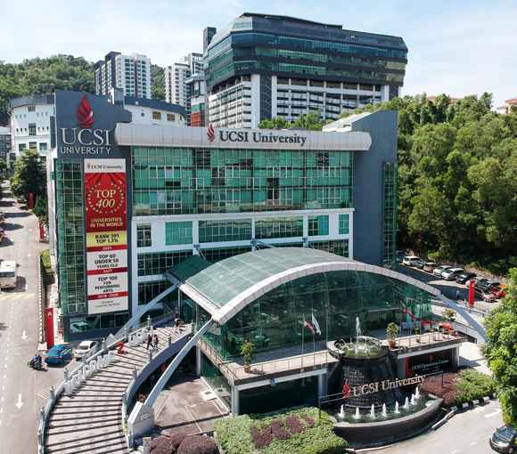
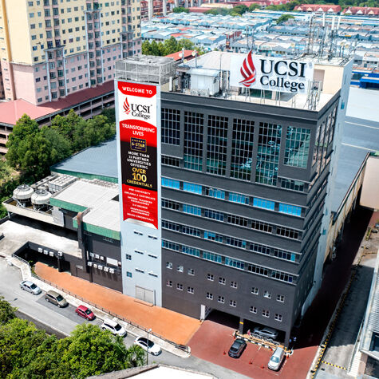
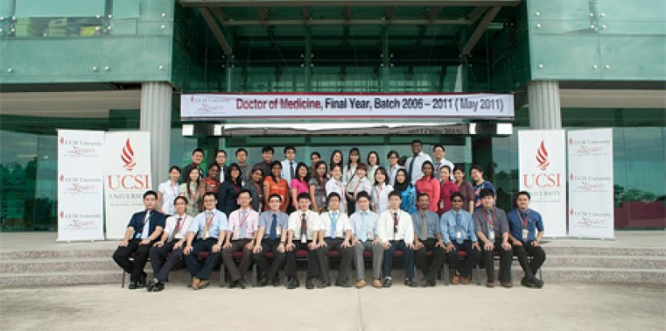
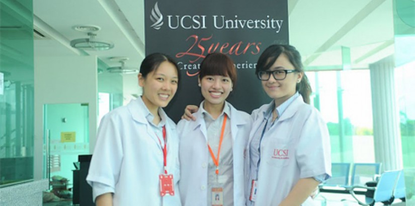
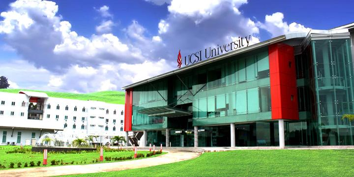
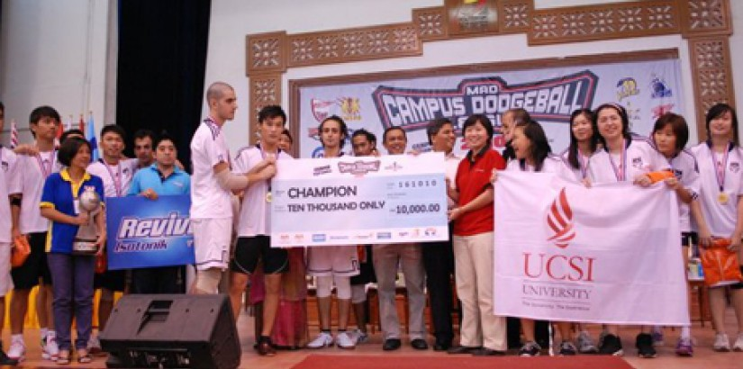

University overview
About UCSI University
Established in 1986, UCSI University is one of Malaysia's premier private higher education institutions. UCSI University is ranked #282 in QS World University Rankings 2027. UCSI is recognized for its academic quality, research impact, and strong industry partnerships.
UCSI is particularly acclaimed for its Institute of Music, as well as its prestigious Medicine, Pharmacy, and Architecture faculties. With a vibrant multicultural environment hosting students from over 110 countries, UCSI emphasizes real-world experience through Malaysia's largest university-industry network.






International students
Study at UCSI University as an international student
This guide is for study at UCSI University's Malaysian campuses. UCSI also has a Bangladesh branch in Dhaka; confirm the country and teaching campus before comparing admission requirements, intakes or fees.
Programmes and tuition
UCSI University UCSI courses and fees for international students
| No | PROGRAMME | Duration | TUITION FEE | TOTAL TUITION FEE | LAB/OTHER FEE | TOTAL LAB/OTHER FEE | FIRST TIME PAYMENT (AFTER APPLICATION) |
|---|---|---|---|---|---|---|---|
| 1 | Doctor of Philosophy in Engineering (PhD) | 3 Years (min 9 semesters *with bridging course) | RM41,382 / RM42,282 | RM41,382 / RM42,282 | Lab fee (per research course) RM500 X 9 sem. Every extension will be charged according to the credit hour to the subject RM4,500 | - | USD 7,432 / RM27,500 (without bridging) | USD 7,676 / RM28,400 (with bridging) |
| 2 | Doctor of Philosophy (Engineering) by Prior Publication | 2 Years (without bridging / with bridging course) | RM41,382 / RM42,282 | - | Lab fee (per research course) RM500 X 6 sem RM3,000. Every extension will be charged according to the credit hour to the subject | - | RM27,500 / USD 7,432 (without bridging) | RM28,400 / USD 7,676 (with bridging) |
| 3 | Industrial PhD In Engineering | 3 Years (min 9 semesters *with bridging course) | RM50,500 / RM51,400 | - | Lab fee (per research course) RM500 X 9 sem. Every extension will be charged according to the credit hour to the subject RM4,500 | - | RM27,500 / USD 7,432 (without bridging) | RM28,400 / USD 7,676 (with bridging) |
| 4 | Master of Philosophy in Engineering (M.Phil) | 2 Years (min 6 semesters *with bridging course) | RM25,380 / RM26,280 | - | Lab fee (per research course) RM500 X 6 sem RM3,000 | - | USD 5,810 / RM21,500 (without bridging) | USD 6,054 / RM22,400 (with bridging) |
| 5 | Master in Engineering (Smart Engineering Management) | 1 Years (min 3 semesters *with bridging course) | RM34,720 / RM35,770 | - | Project fee (per course) RM500 X 2 courses RM1,000. Lab fee (per course) RM750 X 2 courses RM1,500 | - | RM27,000 / USD 7,297 (without bridging) | RM28,050 / USD 7,581 (with bridging) |
| 6 | Master of Petroleum Engineering | 1 Years (min 3 semesters *with bridging course) | RM38,640 / RM40,440 | - | Lab fee (per course) RM450 X 5 courses RM2,250. Project fee (per course) RM500 X 2 courses RM1,000. Every extension will be charged according to the credit hour to the subject | - | RM27,900 / USD 7,541 (without bridging) | RM29,700 / USD 8,027 (with bridging) |
| 7 | Bachelor of Chemical Engineering with Honours | Year 1 to Year 4 | Year 1: RM21,840, Year 2: RM18,540, Year 3: RM21,440, Year 4: RM29,190 | RM91,010 | Year 1: RM1,250, Year 2: RM1,250, Year 3: RM1,250, Year 4: RM1,250. Consumable Parts (min 12 sem): RM900 / RM75 | RM5,900 / RM900 | USD 7,547 / RM27,925 |
| 8 | Bachelor of Civil Engineering with Honours | Year 1 to Year 4 | Year 1: RM24,760, Year 2: RM18,290, Year 3: RM20,500, Year 4: RM26,550 | RM90,100 | Year 1: RM1,250, Year 2: RM1,250, Year 3: RM1,250, Year 4: RM1,250. Consumable Parts (min 12 sem): RM900 / RM75 | RM5,900 / RM900 | USD 7,547 / RM27,925 |
| 9 | Bachelor of Electrical and Electronic Engineering with Honours | Year 1 to Year 4 | Year 1: RM22,190, Year 2: RM20,085, Year 3: RM22,150, Year 4: RM25,590 | RM90,015 | Year 1: RM1,250, Year 2: RM1,250, Year 3: RM1,250, Year 4: RM1,250. Consumable Parts (min 12 sem): RM900 / RM75 | RM5,900 / RM900 | USD 7,547 / RM27,925 |
| 10 | Bachelor of Computer Engineering (Artificial Intelligence) with Honours | Year 1 to Year 4 | Year 1: RM24,240, Year 2: RM21,845, Year 3: RM23,210, Year 4: RM28,350 | RM97,645 | Year 1: RM1,250, Year 2: RM1,250, Year 3: RM1,250, Year 4: RM1,250. Consumable Parts (min 12 sem): RM900 / RM75 | RM5,900 / RM900 | USD 7,547 / RM27,925 |
| 11 | Bachelor of Energy Engineering with Honours | Year 1 to Year 4 | Year 1: RM21,850, Year 2: RM21,000, Year 3: RM22,260, Year 4: RM24,180 | RM89,290 | Year 1: RM1,250, Year 2: RM1,250, Year 3: RM1,250, Year 4: RM1,250. Consumable Parts (min 12 sem): RM900 / RM75 | RM5,900 / RM900 | USD 7,547 / RM27,925 |
| 12 | Bachelor of Mechanical Engineering with Honours | Year 1 to Year 4 | Year 1: RM22,800, Year 2: RM19,180, Year 3: RM22,100, Year 4: RM25,035 | RM89,115 | Year 1: RM1,250, Year 2: RM1,250, Year 3: RM1,250, Year 4: RM1,250. Consumable Parts (min 12 sem): RM900 / RM75 | RM5,900 / RM900 | USD 7,547 / RM27,925 |
| 13 | Bachelor of Mechatronic Engineering with Honours | Year 1 to Year 4 | Year 1: RM21,840, Year 2: RM20,610, Year 3: RM20,080, Year 4: RM27,320 | RM89,850 | Year 1: RM1,250, Year 2: RM1,250, Year 3: RM1,250, Year 4: RM1,250. Consumable Parts (min 12 sem): RM900 / RM75 | RM5,900 / RM900 | USD 7,547 / RM27,925 |
| 14 | Bachelor of Petroleum Engineering with Honours | Year 1 to Year 4 | Year 1: RM21,340, Year 2: RM17,240, Year 3: RM19,550, Year 4: RM34,890 | RM93,020 | Year 1: RM1,250, Year 2: RM1,250, Year 3: RM1,250, Year 4: RM1,250. Consumable Parts (min 12 sem): RM900 / RM75 | RM5,900 / RM900 | USD 7,547 / RM27,925 |
| 15 | Bachelor of Digital Mechanical Technology with Honours | Year 1 to Year 3 | Year 1: RM24,850, Year 2: RM27,955, Year 3: RM27,270 | RM80,075 | Year 1: RM1,250, Year 2: RM1,250, Year 3: RM1,250. Consumable Parts (min 9 sem): RM675 / RM75 | RM3,750 / RM675 | USD 9,373 / RM34,681 |
| 16 | Bachelor of Microelectronic Technology with Honours | Year 1 to Year 3 | Year 1: RM22,635, Year 2: RM30,510, Year 3: RM25,800 | RM78,945 | Year 1: RM1,250, Year 2: RM1,250, Year 3: RM1,250. Consumable Parts (min 9 sem): RM675 / RM75 | RM3,750 / RM675 | RM32,334 / USD 8,739 |
| 17 | Diploma of Engineering Technology (Industrial Design) | Year 1 to Year 2 | Year 1: RM19,640, Year 2: RM26,090 | RM45,730 | Year 1: RM400, Year 2: RM1,000. Consumable Parts (min 7 sem): RM525 / RM75 | RM1,400 / RM525 | RM24,575 / USD 6,642 |
| 18 | Foundation in Science | Year 1 | RM24,000 | RM24,000 | 4 subjects: RM 200 per subject | RM800 | USD 6,784 / RM25,100 |
Schedule remarks:
FACILITIES FEE UNDERGRADUATE (SEMESTER BASIS): ICT RM200, LIBRARY RM200, STUDENT ACTIVITIES RM200 (Total RM650). ENGINEERING EXPLORATORY (DEGREE ONLY) RM300. MEDICAL PLAN RM50. FINAL YEAR PROJECT (1x during Year 4) RM300, (1x during Year 3) RM300. PROJECT FEE (Course Based Year 4) RM200. Minimum 12 semesters for Bachelor's RM11,900. Minimum 9 semesters for Bachelor's RM8,850. Minimum 7 semesters for Diploma RM4,550. Minimum 3 semesters for Foundation RM1,950.
FACILITIES FEE POSTGRADUATE (SEMESTER BASIS): ICT RM200, LIBRARY RM200, FACILITIES RM200, STUDENT ACTIVITIES RM200 (Total RM850). MEDICAL PLAN RM50. Minimum 9 semesters for Doctor Philosophy RM7,650. Minimum 6 semesters for Master in Philosophy RM5,100. Minimum 3 semesters for Master in Smart Engineering & Master of Petroleum Engineering RM2,550.
COMPULSORY SUBJECTS: Bahasa Kebangsaan A RM1,800, Basic English RM1,500, English Foundation RM1,500.
ADMINISTRATION FEE (UNDERGRADUATE): Refundable Deposit RM1,000 / USD 270. International Administration RM4,200 / USD 1,136. Registration Fee (Non-Refundable) RM450 / USD 125. App. Fees + Visa RM3,750 / USD 1,014. TOTAL RM9,400.
ADMINISTRATION FEE (POSTGRADUATE): Refundable Deposit RM1,000 / USD 270. International Administration RM4,200 / USD 1,136. Registration Fee RM450 / USD 125. App. Fees + Visa RM4,200 / USD 1,135. Completion Deposit RM500 / USD 135. TOTAL RM10,350.
NOTES: EMGS payment applies only to application (1st Year). Indonesian students required to pay RM710 as payment of 2 years visa & i-Kad. 6% service tax rate imposed on non-Malaysian citizens starting 1st July 2025.
Download FACULTY OF ENGINEERING, TECHNOLOGY AND BUILT ENVIRONMENT (PDF)
| No | PROGRAMME | Duration | TUITION FEE | TOTAL TUITION FEE | LAB/OTHER FEE | TOTAL LAB/OTHER FEE | FIRST TIME PAYMENT (AFTER APPLICATION) |
|---|---|---|---|---|---|---|---|
| 1 | Doctor of Philosophy in Architecture | 3 Years (*with bridging course) | RM44,400 / RM46,920 | - | Research Issues & Methods Fee (one-time) RM4,000. Every extension will be charged according to the credit hour of the subject. | RM4,000 | RM26,000 / USD 7,027 (without bridging) | RM28,520 / USD 7,708 (with bridging) |
| 2 | Master of Architecture | 2 Year | RM54,870 | - | Lab Fee (per course) RM200 x 3 courses = RM600. Every extension will be charged according to the credit hour of the subject. | RM600 | USD 7,595 / RM28,100 |
| 3 | Master of Philosophy in Built Environment | 2 Year (*with bridging course) | RM30,000 / RM32,520 | - | Research Issues & Methods Fee (one-time) RM4,000. Every extension will be charged according to the credit hour of the subject. | RM4,000 | RM26,000 / USD 7,027 (without bridging) | RM28,520 / USD 7,708 (with bridging) |
| 4 | BSc (Hons) Architecture | Year 1 to Year 3 | Year 1: RM29,730, Year 2: RM38,310, Year 3: RM34,460 | RM102,500 | 2 lab fees of RM200 each (Year 2) | RM400 | RM32,100 / USD 8,676 |
| 5 | BA (Hons) Interior Architecture | Year 1 to Year 3 | Year 1: RM25,940, Year 2: RM27,280, Year 3: RM29,920 | RM83,140 | 2 lab fees of RM200 each (Year 1 & 2) | RM400 | RM32,100 / USD 8,676 |
| 6 | Bachelor of Quantity Surveying (Hons) | Year 1 to Year 4 | Year 1: RM27,850, Year 2: RM27,920, Year 3 & 4: RM27,340 | RM83,110 | 3 lab fees of RM200 each (Year 2 & 4) | RM600 | RM31,900 / USD 8,622 |
| 7 | Diploma in Architectural Studies | Year 1 to Year 3 | Year 1: RM27,840, Year 2: RM26,400, Year 3: RM3,000 | RM57,240 | 2 lab fees of RM200 each (Year 1) | RM400 | RM31,800 / USD 8,595 |
| 8 | Diploma in Interior Architecture | Year 1 to Year 3 | Year 1: RM27,040, Year 2: RM23,040, Year 3: RM3,000 | RM53,080 | 2 lab fees of RM 200 each (Year 1) | RM400 | RM31,800 / USD 8,595 |
| 9 | Foundation in Arts | 1 Year | RM24,000 | RM24,000 | - | - | RM24,300 / USD 6,568 |
Schedule remarks:
FACILITIES FEE UNDERGRADUATE (SEMESTER BASIS): ICT RM300, LIBRARY RM300, STUDENT ACTIVITIES RM300, RESOURCE RM300 (Total RM1,250), MEDICAL PLAN RM50. Bachelor's Degree (Min 7 semesters) RM8,750. Diploma ICT RM200, LIBRARY RM200, STUDENT ACTIVITIES RM200, RESOURCE RM300 (Total RM950), (Min 7 semesters) RM6,650. Foundation ICT RM200, LIBRARY RM200, STUDENT ACTIVITIES RM200 (Total RM650), (Min 3 semesters) RM1,950.
FACILITIES FEE POSTGRADUATE (SEMESTER BASIS): ICT RM300, LIBRARY RM300, STUDENT ACTIVITIES RM300, FACILITIES RM300, RESOURCE RM300 (Total RM1,550), MEDICAL PLAN RM50. Master of Architecture (Min 4 semester) RM6,200. Doctor of Philosophy in Architecture ICT RM200, LIBRARY RM200, STUDENT ACTIVITIES RM200, FACILITIES RM200 (Total RM850), (Min 9 semester) RM7,650. Master in Built Environment (Min 6 semester) RM5,100.
ADDITIONAL SUBJECTS: Basic English RM1,500, English Foundation RM1,500, Bahasa Kebangsaan A RM1,800.
ADMINISTRATION FEE UG: RM9,350. ADMINISTRATION FEE PG: RM10,350.
| No | PROGRAMME | Duration | TUITION FEE | TOTAL TUITION FEE | FIRST TIME PAYMENT (AFTER APPLICATION) |
|---|---|---|---|---|---|
| 1 | Master In Logistics and Supply Chain Management | 1 Year (min 3 semesters *with bridging course) | RM43,760 / RM47,240 | - | RM25,000 / USD 6756 (without bridging) | RM28,480 / USD 7,697 (with bridging) |
| 2 | BSc (Hons) Finance and Investment | Year 1 to Year 3 | Year 1: RM26,590, Year 2: RM21,540, Year 3: RM26,180 | RM74,310 | RM31,300 / USD 8,459 |
| 3 | Bachelor of Financial Economics (Hons) | Year 1 to Year 3 | Year 1: RM20,510, Year 2: RM25,310, Year 3: RM27,500 | RM73,320 | USD 7,108 / RM26,300 |
| 4 | BA (Hons) Accounting | Year 1 to Year 3 | Year 1: RM23,390, Year 2: RM24,560, Year 3: RM28,370 | RM76,320 | RM26,300 / USD 7,108 |
| 5 | BA (Hons) Accounting and Finance | Year 1 to Year 3 | Year 1: RM22,370, Year 2: RM25,580, Year 3: RM28,370 | RM76,320 | USD 7,108 / RM26,300 |
| 6 | BA (Hons) Branding and Advertising | Year 1 to Year 3 | Year 1: RM25,010, Year 2: RM23,210, Year 3: RM25,700 | RM73,920 | USD 8,459 / RM31,300 |
| 7 | BA (Hons) Business Administration | Year 1 to Year 3 | Year 1: RM25,940, Year 2: RM22,340, Year 3: RM25,520 | RM73,800 | USD 8,459 / RM31,300 |
| 8 | BA (Hons) Logistics Management | Year 1 to Year 3 | Year 1: RM20,570, Year 2: RM23,570, Year 3: RM29,690 | RM73,830 | RM26,300 / USD 7,108 |
| 9 | BA (Hons) Supply Chain Operations Management | Year 1 to Year 3 | Year 1: RM20,570, Year 2: RM25,940, Year 3: RM27,560 | RM74,070 | RM26,300 / USD 7,108 |
| 10 | BA (Hons) Marketing | Year 1 to Year 3 | Year 1: RM26,840, Year 2: RM23,360, Year 3: RM23,600 | RM73,800 | RM31,300 / USD 8,459 |
| 11 | Bachelor of Arts (Honours) Entrepreneurship | Year 1 to Year 3 | Year 1: RM24,920, Year 2: RM19,910, Year 3: RM32,000 | RM76,830 | RM26,300 / USD 7,108 |
| 12 | Bachelor of International and Sustainable Business (Honours) | Year 1 to Year 3 | Year 1: RM26,960, Year 2: RM26,180, Year 3: RM23,120 | RM76,260 | RM31,300 / USD 8,459 |
| 13 | Bachelor of Financial Technology (Honours) | Year 1 to Year 3 | Year 1: RM27,640, Year 2: RM23,010, Year 3: RM24,270 | RM74,920 | RM31,300 / USD 8,459 |
| 14 | Diploma in Management | Year 1 to Year 2 | Year 1: RM23,396, Year 2: RM21,940 | RM45,336 | RM26,300 / USD 7,108 |
| 15 | Diploma in Logistics Management | Year 1 to Year 2 | Year 1: RM23,178, Year 2: RM21,996 | RM45,174 | RM26,300 / USD 7,108 |
| 16 | Diploma in Finance | Year 1 to Year 2 | Year 1: RM25,070, Year 2: RM20,740 | RM45,810 | RM31,300 / USD 8,459 |
| 17 | Foundation in Arts | 1 Year | RM24,000 | RM24,000 | RM24,300 / USD 6,568 |
Schedule remarks:
FACILITIES FEE (SEMESTER BASIS) KL CAMPUS: ICT RM200, LIBRARY RM200, STUDENT ACTIVITIES RM200 (Total RM650). MEDICAL PLAN RM50. FACILITIES (Master only) RM200. Minimum 3 semesters for Master RM2,550. Minimum 9 semesters for Bachelor's Degree RM5,850. Minimum 7 semesters for Diploma RM4,550. Minimum 3 semesters for Foundation RM1,950.
ADMINISTRATION FEE (POSTGRADUATE): RM10,350. ADMINISTRATION FEE (UNDERGRADUATE): RM9,350.
Every extension will be charged according to the credit hour to the subject. Bridging course is required for those who do not meet the entry requirements.
Download FACULTY OF BUSINESS AND MANAGEMENT (KUALA LUMPUR CAMPUS) (PDF)
| No | PROGRAMME | Duration | TUITION FEE | TOTAL TUITION FEE | FIRST TIME PAYMENT (AFTER APPLICATION) |
|---|---|---|---|---|---|
| 1 | Master of Business Administration (Blue Ocean Strategy) | 1.5 Years (min 4 semesters *with bridging course) | RM 35,000 / RM 38,430 | - | RM 20,475 / USD 5,534 |
| 2 | BComm (Hons) Accounting and Finance | Year 1 to Year 3 | Year 1: RM20,700, Year 2: RM20,070, Year 3: RM21,870 | RM62,640 | USD 5,919 / RM21,900 |
| 3 | BComm (Hons) Marketing | Year 1 to Year 3 | Year 1: RM22,500, Year 2: RM21,870, Year 3: RM20,070 | RM64,440 | RM21,900 / USD 5,919 |
| 4 | BA in Business Management (Honours) | Year 1 to Year 3 | Year 1: RM23,490, Year 2: RM21,690, Year 3: RM18,270 | RM63,450 | USD 5,378 / RM19,900 |
| 5 | Bachelor of International Business (Honours) | Year 1 to Year 3 | Year 1: RM22,500, Year 2: RM20,070, Year 3: RM21,870 | RM64,440 | RM21,900 / USD 5,919 |
| 6 | Diploma In Accounting | Year 1 to Year 2 | Year 1: RM19,000, Year 2: RM13,040 | RM32,040 | RM21,900 / USD 5,919 |
| 7 | Diploma in Business Management | Year 1 to Year 2 | Year 1: RM18,800, Year 2: RM12,600 | RM31,400 | RM19,900 / USD 5,378 |
| 8 | Diploma In International Business | Year 1 to Year 2 | Year 1: RM18,800, Year 2: RM12,600 | RM31,400 | USD 5,378 / RM19,900 |
| 9 | Foundation Studies (Arts) | 1 Year | RM20,380 | RM20,380 | USD 6,568 / RM24,300 |
| 10 | Foundation Studies (Science) | 1 Year | RM20,380 | RM20,380 | USD 6,568 / RM24,300 |
Schedule remarks:
FACILITIES FEE (SEMESTER BASIS) KUCHING CAMPUS: ICT RM75, LIBRARY RM75, STUDENT ACTIVITIES RM100 (Total RM250). FACILITIES (MASTER ONLY) RM75. Minimum 4 semesters for Master RM1,300. Minimum 9 semesters for Bachelor's Degree RM2,250. Minimum 7 semesters for Diploma RM1,750.
ADDITIONAL SUBJECTS: Basic English RM1,500, English Foundation RM1,500, Bahasa Kebangsaan A RM1,800.
Every extension will be charged according to the credit hour to the subject. Bridging course is required for those who do not meet the entry requirements.
Download FACULTY OF BUSINESS AND MANAGEMENT (KUCHING CAMPUS) (PDF)
| No | PROGRAMME | Duration | TUITION FEE | TOTAL TUITION FEE | LAB/OTHER FEE | FIRST TIME PAYMENT (AFTER APPLICATION) |
|---|---|---|---|---|---|---|
| 1 | Doctor of Philosophy (Business and Management) | 3 Years (minimum 9 semesters *with bridging course) | RM45,468 / RM53,343 | - | Every extension will be charged according to the credit hour of the subject. *bridging course required for those who do not meet the entry requirement | RM27,000 / USD 7,297 (without bridging) | RM34,875 / USD 9,426 (with bridging) |
| 2 | Doctor Of Business Administration (DBA) | 3 Years (minimum 9 semesters *with bridging course) | RM71,600 / RM82,100 | - | Every extension will be charged according to the credit hour of the subject. *bridging course required for those who do not meet the entry requirement. Extension fee is applicable if the student exceeds 3 years of study period RM4800 per semester | RM27,000 / USD 7,297 (without bridging) | USD 10,135 / RM37,500 (with bridging) |
| 3 | Master In Business Administration (MBA) | 1 Year (minimum 3 semesters *with bridging course) | RM43,760 / RM47,240 | - | Every extension will be charged according to the credit hour of the subject. *bridging course required for those who do not meet the entry requirement. Viva and thesis examination fee RM1,000 | USD 7,297 / RM27,000 (without bridging) | RM30,480 / USD 8,238 (with bridging) |
| 4 | Master of Philosophy (Business and Management) | 2 Years (minimum 6 semesters) | RM25,000 | - | Viva and thesis revision fee RM1,000. Every extension will be charged according to the credit hour of the subject | USD 7,297 / RM27,000 |
| 5 | Master in Business Administration (MBA) ODL Mode | 2 Years (minimum 6 semesters *with bridging course) | RM43,760 / RM47,240 | - | Every extension will be charged according to the credit hour of the subject. *bridging course required for those who do not meet the entry requirement | RM26,350 / USD 7,122 (without bridging) | RM29,830 / USD 8,062 (with bridging) |
Schedule remarks:
FACILITIES FEE (SEMESTER BASIS): ICT RM200, LIBRARY RM200, FACILITIES RM200, STUDENT ACTIVITIES RM200 (Total RM850), MEDICAL PLAN RM50. Minimum 9 semesters for Doctorate programme RM7,650. Minimum 6 semesters for Master of Philosophy RM5,100. Minimum 3 semesters for Master in Business Administration RM2,550.
ADDITIONAL SUBJECTS: Basic English RM1,500, English Foundation RM1,500, Bahasa Kebangsaan A RM1,800.
MBA ODL (MIN 6 SEMESTER) FEES: Application Fee RM1,600, Registration Fee RM450, Administration Fee RM4,200, Refundable Deposit RM1,000, Completion Deposit RM500, E-Resources RM600 (Total RM8,350).
ADMINISTRATION FEE (POSTGRADUATE): RM10,350.
| No | PROGRAMME | Duration | TUITION FEE | TOTAL TUITION FEE | LAB FEE/OTHERS | FIRST TIME PAYMENT (AFTER APPLICATION) |
|---|---|---|---|---|---|---|
| 1 | Doctor of Philosophy in Mathematical Sciences | 3 Years (minimum 9 semester) | RM59,160 | - | Thesis Examination Fee RM2,500 | RM27,000 / USD 7,297 |
| 2 | Master of Science (Actuarial Management) Structure B | 1 Year (minimum 3 semester) | RM33,339 | - | - | USD 7,297 / RM 27,000 |
| 3 | Master of Science (Actuarial Management) Structure B | 1 Year (minimum *bridging course / maximum *bridging course) | RM35,939 / RM44,389 | - | - | USD 10,284 / RM 38,050 |
| 4 | Master of Science (Actuarial Management) Structure C | 1 Year (minimum 3 semester) | RM36,028 | - | - | USD 7,297 / RM 27,000 |
| 5 | Master of Science (Actuarial Management) Structure C | 1 Year (minimum *bridging course / maximum *bridging course) | RM38,628 / RM47,078 | - | - | USD 10,284 / RM 38,050 |
| 6 | Master of Science in Mathematical Sciences | 2 Years (minimum 6 semester) | RM25,290 | - | Thesis Examination Fee RM2,000 | RM27,000 / USD 7,297 |
| 7 | BSc (Hons) Actuarial Science | Year 1 to Year 3 | Year 1: RM24,810, Year 2: RM26,090, Year 3: RM27,560 | RM78,460 | - | USD 7,108 / RM26,300 |
| 8 | BSc (Hons) Actuarial Science and Finance | Year 1 to Year 3 | Year 1: RM24,160, Year 2: RM25,790, Year 3: RM29,240 | RM79,190 | - | RM26,300 / USD 7,108 |
| 9 | Bachelor of Science (Honours) Actuarial Science with Data Analytics | Year 1 to Year 3 | Year 1: RM23,610, Year 2: RM32,250, Year 3: RM29,780 | RM85,640 | - | RM26,300 / USD 7,108 |
| 10 | Foundation in Arts | 1 Year | RM24,000 | RM24,000 | - | USD 6,568 / RM24,300 |
Schedule remarks:
ADMINISTRATION FEE (POSTGRADUATE): RM10,350. ADMINISTRATION FEE (UNDERGRADUATE): RM9,350.
FACILITIES FEE POSTGRADUATE (SEMESTER BASIS): ICT RM200, LIBRARY RM200, STUDENT ACTIVITIES RM200, RESOURCE RM200 (Total RM850), MEDICAL PLAN RM50. Min 9 semesters for PhD RM7,650, Min 6 semesters for Master in Math Sciences RM5,100, Min 3 semesters for Master in Science RM2,550.
FACILITIES FEE UNDERGRADUATE (SEMESTER BASIS): ICT RM200, LIBRARY RM200, STUDENT ACTIVITIES RM200 (Total RM650), MEDICAL PLAN RM50. Min 9 semesters for Bachelor's RM5,850. Min 3 semesters for Foundation RM1,950.
ADDITIONAL SUBJECTS: Basic English RM1,500, English Foundation RM1,500, Bahasa Kebangsaan A RM1,800.
Download INSTITUTE OF ACTUARIAL SCIENCE AND DATA ANALYTICS (PDF)
| No | PROGRAMME | Duration | TUITION FEE | TOTAL TUITION FEE | LAB FEE | TOTAL LAB FEE | FIRST TIME PAYMENT (AFTER APPLICATION) |
|---|---|---|---|---|---|---|---|
| 1 | Doctor of Philosophy (Science) | 3 Years | RM48,300 | RM48,300 | Science Lab (RM600 per subject) x 7 subjects RM4,200. Thesis Examination Fee RM2,500. Semester Extension (Year 3 onwards) RM6,000 | RM6,700 | RM25,600 / USD 6,918 |
| 2 | Master of Science (Biotechnology) | 1.5 Years (minimum 4 semesters / Bridging Course) | RM38,501 / RM48,133 | - | Science Lab (RM600 per subject) x 7 subjects RM4,200. Every extension will be charged according to the credit hour of the subject. | RM4,200 | RM28,200 / USD 7,622 | USD 10,225 / RM37,832 |
| 3 | Master of Science (Biotechnology with Business Management) | 1.5 Years (minimum 4 semesters / Bridging Course) | RM39,597 / RM49,229 | - | Science Lab (RM600 per subject) x 4 subjects RM2,400. Every extension will be charged according to the credit hour of the subject. | RM2,400 | USD 7,622 / RM28,200 | RM37,832 / USD 10,225 |
| 4 | Master of Science (Applied Sciences) by Research | 2 Years | RM27,875 | RM27,875 | Science Lab (RM600 per subject) x 4 subjects RM2,400. Thesis Examination Fee RM2,000. Semester Extension (Semester 6 onwards) RM5,000 | RM4,400 | RM25,000 / USD 6,756 |
| 5 | Master of Science (Food Science with Business Management) | 1.5 Years (minimum 4 semesters / Bridging Course) | RM36,971 / RM45,774 | - | Science Lab (RM600 per subject) RM600 X 4 subjects RM2,400. Bridging Science Lab (RM600 X 4 subjects) + (RM400 X 1 subject) RM2,800. Every extension will be charged according to the credit hour of the subject. | RM2,400 / RM2,800 | USD 7,622 / RM28,200 | RM37,403 / USD 10,109 |
| 6 | Master of Science in Nutrition with Management | 1 Year (minimum 4 semesters / Bridging Course) | RM42,440 / RM51,243 | - | Science Lab (RM600 per subject) RM600 X 3 subjects RM1,800. Bridging Science Lab (RM600 X 3 subjects) + (RM400 X 1 subject) RM2,200. Every extension will be charged according to the credit hour of the subject. | RM1,800 / RM2,200 | RM27,600 / USD 7,460 | RM36,803 / USD 9,947 |
| 7 | BSc (Hons) Biotechnology | Year 1 to Year 3 | Year 1: RM24,675, Year 2: RM31,023, Year 3: RM34,804 | RM90,502 | Year 1: RM2,000, Year 2: RM3,600, Year 3: RM1,600 | RM7,200 | USD 7,649 / RM28,300 |
| 8 | BSc (Hons) Food Science with Nutrition | Year 1 to Year 3 | Year 1: RM25,504, Year 2: RM28,536, Year 3: RM35,430 | RM89,470 | Year 1: RM2,000, Year 2: RM2,800, Year 3: RM2,400 | RM7,200 | RM27,500 / USD 7,432 |
| 9 | BSc (Hons) Nutrition with Wellness | Year 1 to Year 3 | Year 1: RM32,312, Year 2: RM31,337, Year 3: RM36,796 | RM100,445 | Year 1: RM1,200, Year 2: RM1,600 | RM2,800 | RM32,500 / USD 8,784 |
| 10 | BSc (Hons) Aquatic Science | Year 1 to Year 3 | Year 1: RM25,916, Year 2: RM29,031, Year 3: RM33,326 | RM88,273 | Year 1: RM2,400, Year 2: RM2,000, Year 3: RM2,000 | RM6,400 | RM32,500 / USD 8,784 |
| 11 | BSc (Hons) Forensic Science | Year 1 to Year 4 | Year 1: RM29,278, Year 2: RM35,764, Year 3: RM22,733, Year 4: RM20,725 | RM108,500 | Year 1: RM2,800, Year 2: RM2,800, Year 3: RM2,400, Year 4: RM2,000 | RM10,000 | RM32,500 / USD 8,784 |
| 12 | BSc (Hons) Applied Microbiology | Year 1 to Year 3 | Year 1: RM27,188, Year 2: RM27,431, Year 3: RM30,281 | RM84,900 | Year 1: RM2,400, Year 2: RM2,400, Year 3: RM2,400 | RM7,200 | RM32,500 / USD 8,784 |
| 13 | Diploma in Aquaculture with Entrepreneurship | Year 1 to Year 2 | Year 1: RM23,929, Year 2: RM24,460 | RM48,389 | Year 1: RM2,800, Year 2: RM3,200 | RM6,000 | RM27,500 / USD 7,432 |
| 14 | Foundation in Science | 1 Year | RM24,000 | RM24,000 | 5 subjects RM200 per subject | RM1,000 | RM25,100 / USD 6,784 |
Schedule remarks:
FACILITIES FEE POSTGRADUATE (SEMESTER BASIS): ICT RM200, LIBRARY RM200, FACILITIES RM200, STUDENT ACTIVITIES RM200 (Total RM850), MEDICAL PLAN RM50. Minimum 9 semesters for Doctor Philosophy RM7,650. Minimum 6 semesters for Master in Applied Science RM5,100. Minimum 4 semesters for Master Science in Biotech, Biotech with Business & Food Science RM3,400. Minimum 3 semesters for Master in Nutrition with Management RM2,550.
FACILITIES FEE UNDERGRADUATE (SEMESTER BASIS): ICT RM200, LIBRARY RM200, STUDENT ACTIVITIES RM200 (Total RM650), MEDICAL PLAN RM50. SCIENCE LAB (PER SUBJECT)* RM400. Minimum 12 semesters for BSc (Hons) Forensic Science RM7,800. Minimum 9 semesters for all other Bachelor's Degree RM5,850. Minimum 6 semesters for Diploma RM3,900. Minimum 3 semesters for Foundation RM1,950.
ADMINISTRATION FEE (POSTGRADUATE): RM10,350. ADMINISTRATION FEE (UNDERGRADUATE): RM9,350.
COMPULSORY SUBJECTS: Basic English RM1,500, English Foundation RM1,500, Bahasa Kebangsaan A RM1,800.
| No | PROGRAMME | Duration | TUITION FEE | TOTAL TUITION FEE | LAB FEE | TOTAL LAB FEE | FIRST TIME PAYMENT (AFTER APPLICATION) |
|---|---|---|---|---|---|---|---|
| 1 | Doctor of Philosophy (Pharmaceutical Sciences) | 3 Years | RM62,200 | - | Thesis Examination Fee RM2,500. Lab Fee (per research course) RM 200 X 6 Semesters RM1,200. Every extension will be charged according to the credit hour of the subject. | - | RM27,600 / USD 7,459 |
| 2 | Master of Science in Pharmaceutical Chemistry | 1 Year | RM37,800 | - | Science Lab (RM600 X 3 Subjects) RM1,800. Thesis Examination RM1,000. Re-Submission of Thesis Examination RM1,500 | - | RM28,000 / USD 7,568 |
| 3 | Master of Science in Pharmaceutical Technology | 1 Year | RM37,800 | - | Science Lab (RM600 X 3 Subjects) RM1,800. Thesis Examination RM1,000. Re-Submission of Thesis Examination RM1,500 | - | USD 7,568 / RM28,000 |
| 4 | Master of Science (Pharmaceutical Sciences) | 2 Years | RM47,060 | - | Science lab (RM600 x 4 Subjects) RM2,400. Thesis Examination RM2,500. Semester Extension (Sem 5 Onwards) RM8,000 | - | USD 7,568 / RM28,000 |
| 5 | Master of Clinical Pharmacy Practice | 1 Year | RM37,800 | - | - | - | RM27,000 / USD 7,297 |
| 6 | Bachelor of Pharmacy (Hons) | Year 1 to Year 4 | Year 1: RM43,553, Year 2: RM43,553, Year 3: RM42,653, Year 4: RM44,103 | RM173,862 | Pharmacy & Science lab x8 RM3,400. Facilities fee does not include transportation costs incurred during practical attachments at hospitals | RM27,200 | RM50,000 / USD 13,514 |
| 7 | Bachelor of Formulation Science (Honours) | Year 1 to Year 3 | Year 1: RM28,790, Year 2: RM29,480, Year 3: RM30,920 | RM89,190 | Pharmacy & Science lab x6 RM1,250 | RM7,500 | USD 8,878 / RM32,850 |
| 8 | Diploma in Pharmacy | Year 1 to Year 3 | Year 1: RM25,380, Year 2: RM27,370, Year 3: RM3,660 | RM56,410 | Year 1 RM1,670, Year 2 RM1,670, Year 3 RM1,670 | RM5,010 | RM32,970 / USD 8,911 |
| 9 | Diploma in Cosmetic Science | Year 1 to Year 2 | Year 1: RM30,500, Year 2: RM26,240 | RM56,740 | Year 1 RM2,500, Year 2 RM2,500 | RM5,000 | RM33,800 / USD 9,135 |
| 10 | Diploma in Packaging Science and Technology | Year 1 to Year 2 | Year 1: RM29,990, Year 2: RM26,220 | RM56,210 | Year 1 RM2,500, Year 2 RM2,500 | RM5,000 | RM33,800 / USD 9,135 |
| 11 | Foundation in Science | 1 Year | RM24,000 | RM24,000 | RM200 per subject (5 subjects) | RM1,000 | USD 6,784 / RM25,100 |
Schedule remarks:
FACILITIES FEE UNDERGRADUATE (SEMESTER BASIS): ICT RM300, LIBRARY RM300, STUDENT ACTIVITIES RM300 (Total RM950), MEDICAL PLAN RM50. Minimum 8 semesters for Bachelor of Pharmacy (Hons) RM7,600. Minimum 6 semesters for Bachelor of Formulation Science RM5,700. For Diploma in Pharmacy/Cosmetic Science ICT RM200, LIBRARY RM200, STUDENT ACTIVITIES RM200 (Total RM650), MEDICAL PLAN RM50. Minimum 7 semesters for Diploma in Pharmacy RM4,550. Minimum 6 semesters for other Diploma RM3,900. Minimum 3 semesters for Foundation RM1,950.
FACILITIES FEE POSTGRADUATE (SEMESTER BASIS): ICT RM300, LIBRARY RM300, FACILITIES RM300, STUDENT ACTIVITIES RM300 (Total RM1,250), MEDICAL PLAN RM50. Minimum 6 semesters for PhD RM7,500. Minimum 4 semesters for Master of Science (Pharmaceutical Sciences) RM5,000. Minimum 2 semesters for Master of Science in Pharmaceutical Tech/Chem RM2,500. Minimum 2 semesters for Master of Clinical Pharmacy Practice RM1,700 (ICT RM200, LIBRARY RM200, FACILITIES RM200, STUDENT ACTIVITIES RM200 - Total RM850).
ADMINISTRATION FEE UG: App Fees + Visa Pharmacy RM9,850, Others RM9,350. ADMINISTRATION FEE PG: RM10,350.
COMPULSORY SUBJECTS: Basic English RM1,500, English Foundation RM1,500, Bahasa Kebangsaan A RM1,800.
| No | PROGRAMME | Duration | TUITION FEE | TOTAL TUITION FEE | LAB FEE | FIRST TIME PAYMENT |
|---|---|---|---|---|---|---|
| 1 | Doctor of Philosophy (Medical Sciences) | 3 Years (min 6 sem) | RM68,900 | RM68,900 | Thesis Examination Fee (inclusive in tuition fee) RM2,500. Lab Fee (per research course) RM600 x 5 subjects RM3,000. Every extension will be charged according to the research course. | RM26,000 / USD 7,028 |
| 2 | Master of Science (Healthy Aging, Medical Aesthetic & Regenerative Medicine) | 2 Years (min 6 sem) | RM58,480 | RM58,480 | Every extension will be charged according to the credit hour of the subject. | RM25,000 / USD 6,756 |
| 3 | Graduate Certificate in Aesthetic Assistant with Wellness | 1 Year | RM20,400 | RM20,400 | Lab Fee year 1 RM200, Lab Fee year 2 RM600 | RM26,500 / USD 7,162 |
| 4 | Bachelor of Optometry (Hons) | Year 1 to Year 4 | Year 1: RM21,310, Year 2: RM26,140, Year 3: RM30,230, Year 4: RM34,030 | RM111,710 | Optometry Facility RM1,100 per semester (min 8 Semester) RM8,800 | RM27,700 / USD 7,486 |
| 5 | Diploma in Opticianry | Year 1 to Year 3 | Year 1: RM16,700, Year 2: RM17,700, Year 3: RM17,330 | RM51,730 | Optometry Facility RM900 per semester (min 6 Sem) RM5,400 | RM25,500 / USD, 6892 |
| 6 | Foundation in Science | 1 Year | RM24,000 | RM24,000 | Science Lab 5 subjects RM1,000 (RM200 per subject) | RM25,100 / USD 6,784 |
Schedule remarks:
FACILITIES FEE UNDERGRADUATE: NURSING & OPTOMETRY (ICT RM300, LIBRARY RM300, MEDICAL PLAN RM50, STUDENT ACTIVITIES RM300 - Total RM950), Min 8 semesters Bachelor's RM7,600, Min 6 semesters Diploma RM5,700. CERTIFICATE & FOUNDATION (ICT RM200, LIBRARY RM200, MEDICAL PLAN RM50, STUDENT ACTIVITIES RM200 - Total RM650), Min 3 semesters Foundation RM1,950.
FACILITIES FEE POSTGRADUATE: PHD (ICT RM300, LIBRARY RM300, STUDENT ACTIVITIES RM300, FACILITIES RM300 - Total RM1,250, Medical RM50). Min 6 semesters RM7,500. MASTER (ICT RM200, LIBRARY RM200, STUDENT ACTIVITIES RM200, FACILITIES RM200 - Total RM850, Medical RM50). Min 5 semesters RM4,250.
ADMINISTRATION FEE: PG RM10,350. UG RM9,350.
Download FACULTY OF MEDICINE AND HEALTH SCIENCES (KL CAMPUS) (PDF)
| No | PROGRAMME | Duration | TUITION FEE | TOTAL TUITION FEE | LAB FEE / OTHER | FIRST TIME PAYMENT |
|---|---|---|---|---|---|---|
| 1 | Doctor of Medicine | Year 1 to Year 5 | Year 1: RM76,100, Year 2: RM77,300, Year 3: RM86,550, Year 4: RM85,000, Year 5: RM85,000 | RM409,950 | Medical Facilities Fee (Semester basis) RM78,000. Breakdown: Year 1 RM7,500, Year 2 RM7,500, Year 3 RM8,000, Year 4 RM8,000, Year 5 RM8,000 | RM103,237 / USD27,902 |
| 2 | Bachelor of Nursing (Hons) | Year 1 to Year 4 | Year 1: RM25,700, Year 2: RM22,300, Year 3: RM18,250, Year 4: RM16,900 | RM83,150 | Clinical Skill Unit RM200 per semester (min 8 Sem) RM1,600. Facilities fee does not include transportation costs incurred during practical attachments at hospitals. Uniform = RM175 per pair | RM27,175 / USD 7,345 |
| 3 | Diploma in Nursing | Year 1 to Year 3 | Year 1: RM20,450, Year 2: RM21,380, Year 3: RM16,800 | RM58,630 | Clinical Skill Unit RM200 per semester (min 6 Sem) RM1,200 | RM27,175 / USD 7,345 |
| 4 | Advanced Diploma in Midwifery | 1 Year | RM25,990 | RM25,990 | Clinical Skill Unit RM200 per semester (min 3 Sem) RM600 | RM26,875 / USD 7,264 |
| 5 | Foundation in Science | 1 Year | RM19,500 | RM19,500 | Science Lab 5 subjects RM1,000 (per subject RM200) | RM24,900 / USD 6,730 |
| 6 | Foundation in Arts | 1 Year | RM19,000 | RM19,000 | - | RM24,300 / USD 6,568 |
Schedule remarks:
FACILITIES FEE UNDERGRADUATE: MEDICINE ONLY (STUDENT ACTIVITIES RM300, MEDICAL PLAN RM50, Min 10 semesters RM3,500). NURSING (Min 8 semesters Bachelor's RM7,600, Min 6 semesters Diploma RM5,700). ADVANCED DIPLOMA (Min 3 semesters RM1,950).
ADMINISTRATION FEE: Application Fees + Visa (Non-Refundable) Medicine only RM4,200 / USD 1,135 (Total Admin UG Medicine RM9,850). Others RM9,350.
Download FACULTY OF MEDICINE AND HEALTH SCIENCES (SPRINGHILL CAMPUS) (PDF)
| No | PROGRAMME | Duration | TUITION FEE | FIRST TIME PAYMENT (AFTER APPLICATION) |
|---|---|---|---|---|
| 1 | Doctor of Philosophy in Computer Science | 3 Years | RM35,700 (with bridging course RM38,400) | RM27,000 / USD 7,297 (with bridging: RM29,700 / USD 8,027) |
| 2 | Master of Science in Technopreneurship | 1 Year | RM42,275 (with bridging course RM43,625) | RM27,000 / USD 7,297 (with bridging: RM28,350 / USD 7,662) |
| 3 | Master of Science in Computer Science | 2 Years | RM25,050 (with bridging course RM27,750) | RM27,000 / USD 7,297 (with bridging: RM29,700 / USD 8,027) |
| 4 | Master of Science in Digital Technology and Analytics | 1 Year | RM49,800 (with bridging course RM51,150) | RM27,000 / USD 7,297 (with bridging: RM28,350 / USD 7,662) |
| 5 | BSc (Hons) Business Information Systems | Year 1 to Year 3 | Year 1 RM22,860, Year 2 RM29,090, Year 3 RM24,950. Total RM76,900 (with bridging course RM78,250) | RM26,300 / USD 7,108 (with bridging: RM27,650 / USD 7,473) |
| 6 | Bachelor of Computer Science (Honours) | Year 1 to Year 3 | Year 1 RM23,450, Year 2 RM29,390, Year 3 RM23,890. Total RM76,730 (with bridging course RM78,080) | RM26,300 / USD 7,108 (with bridging: RM27,650 / USD 7,473) |
| 7 | Bachelor of Computer Science (Hons) Mobile Computing and Networking | Year 1 to Year 3 | Year 1 RM21,410, Year 2 RM31,010, Year 3 RM23,210. Total RM75,630 (with bridging course RM76,980) | RM26,300 / USD 7,108 (with bridging: RM27,650 / USD 7,473) |
| 8 | Bachelor of Computer Science in Data Science with Honours | Year 1 to Year 3 | Year 1 RM24,620, Year 2 RM31,070, Year 3 RM23,020. Total RM78,710 (with bridging course RM80,060) | RM26,300 / USD 7,108 (with bridging: RM27,650 / USD 7,473) |
| 9 | Bachelor of Computer Science in Cyber Security with Honours | Year 1 to Year 3 | Year 1 RM24,093, Year 2 RM33,475, Year 3 RM32,582. Total RM90,150 (with bridging course RM91,500) | RM31,300 / USD 8,459 (with bridging: RM32,650 / USD 8,824) |
| 10 | Bachelor of Computer Science in Artificial Intelligence with Honours | Year 1 to Year 3 | Year 1 RM28,182, Year 2 RM28,646, Year 3 RM30,772. Total RM87,600 (with bridging course RM88,950) | RM31,300 / USD 8,459 (with bridging: RM32,650 / USD 8,824) |
| 11 | Bachelor of Computer Science (Honours) (TVET Module) | Year 1 to Year 3 | Year 1 RM25,370, Year 2 RM32,480, Year 3 RM23,890. Total RM81,740 (with bridging course RM83,090) | RM31,300 / USD 8,459 (with bridging: RM32,650 / USD 8,824) |
| 12 | Diploma in Information Technology (TVET Module) | Year 1 to Year 2 | Year 1 RM24,332, Year 2 RM25,347. Total RM49,679 (with bridging course RM51,029) | RM26,300 / USD 7,108 (with bridging: USD 7,473 RM27,650) |
| 13 | Diploma in Information Technology | Year 1 to Year 2 | Year 1 RM24,560, Year 2 RM23,070. Total RM47,630 | RM26,300 / USD 7,108 |
| 14 | Foundation in Arts | 1 Year | RM24,000 | RM24,300 / USD 6,568 |
Schedule remarks:
FACILITIES FEE POSTGRADUATE: ICT RM200, LIBRARY RM200, STUDENT ACTIVITIES RM200, FACILITIES RM200 (Total RM850), MEDICAL PLAN RM50. Minimum 9 semesters for Doctor Philosophy RM7,650. Minimum 6 semesters for Master in Computer Science RM5,100. Minimum 3 semesters for Master in Technopreneurship & Digital technology RM2,550.
FACILITIES FEE UNDERGRADUATE: ICT RM200, LIBRARY RM200, STUDENT ACTIVITIES RM200 (Total RM650), MEDICAL PLAN RM50. Minimum 9 semesters for Bachelor's Degree RM5,850. Minimum 7 semesters for Diploma RM4,550. Minimum 3 semesters for Foundation RM1,950.
ADMINISTRATION FEE: PG RM10,350. UG RM9,350.
Download INSTITUTE OF COMPUTER SCIENCE AND DIGITAL INNOVATION (PDF)
| No | PROGRAMME | Duration | TUITION FEE | LAB FEE/OTHERS | FIRST TIME PAYMENT (AFTER APPLICATION) |
|---|---|---|---|---|---|
| 1 | Doctor of Philosophy in Psychology | 3 Years (min 9 semesters) | RM40,700 | - | RM27,000 / USD7,297 |
| 2 | PhD (Education) | 3 Years (min 9 semesters *with bridging course) | RM62,050 / RM67,650 | Proposal Application Fee RM400. Thesis Examination Fee RM4,000. Every extension will be charged according to the credit hour of the subject. | USD7,297 / RM27,000 (without bridging) | USD 8,595 / RM31,800 (with bridging) |
| 3 | Master of Child Psychology | 1.5 Years (minimum 4 semesters *with bridging course) | RM40,400 / RM30,120 | Bridging course is applicable for those with non-psychology background | RM27,000 / USD 7,297 |
| 4 | Master of Clinical Psychology | 2 Years (minimum 5 semesters) | RM54,630 | Personality test fee RM120 | RM27,000 / USD 7,297 |
| 5 | Master of Education | 1 Year (minimum 3 semesters *with bridging course) | RM49,100 / RM54,700 | - | USD 7,297 / RM27,000 (without bridging) | RM32,600 / USD 8,811 (with bridging) |
| 6 | Master in Strategic Communication | 1 Year (minimum 3 semesters *with bridging course) | RM42,000 / RM44,400 | Every extension will be charged according to the credit hour of the subject. | USD 7,297 / RM27,000 (without bridging) | RM29,400 / USD 7,946 (with bridging) |
| 7 | Postgraduate Diploma in Tertiary Teaching (PGDTT) | 1 Year (minimum 2 semesters. Full Time 12 months. Part Time 18 to 24 months) | RM19,500 | - | USD 6,055 / RM22,400 |
| 8 | Postgraduate Certificate in Education (PGCE) | Year 1 | RM26,650 | - | USD 7,297 / RM27,000 |
| 9 | BA (Hons) Psychology | Year 1 to Year 3 | Year 1 RM22,800, Year 2 RM31,450, Year 3 RM21,340. Total RM75,590 | - | RM26,300 / USD 7,108 |
| 10 | BA (Hons) in Psychology (with bridging courses) | Year 1 to Year 3 | Year 1 RM26,160, Year 2 RM31,450, Year 3 RM21,340. Total RM78,950 | Science Lab fee RM200 | USD 8,070 / RM29,860 |
| 11 | BA (Hons) English Language and Communication | Year 1 to Year 3 | Year 1 RM21,480, Year 2 RM22,800, Year 3 RM23,350. Total RM67,630 | - | RM26,300 / USD 7,108 |
| 12 | BA (Hons) Mass Communication | Year 1 to Year 3 | Year 1 RM24,410, Year 2 RM22,340, Year 3 RM28,410. Total RM75,160 | - | RM26,300 / USD 7,108 |
| 13 | Bachelor of Early Childhood Education (Honours) | Year 1 to Year 3 | Year 1 RM28,590, Year 2 RM24,110, Year 3 RM21,230. Total RM73,930 | - | RM31,300 / USD8,459 |
| 14 | Foundation in Arts | Year 1 | RM24,000 | - | RM24,300 / USD6,568 |
Schedule remarks:
FACILITIES FEE POSTGRADUATE: ICT RM200, LIBRARY RM200, STUDENT ACTIVITIES RM200, FACILITIES RM200 (Total RM850), MEDICAL PLAN RM50. PhD Education (min 9 semester) RM7,650, Master of Child Psychology (min 4 semester) RM3,400, Master of Clinical Psychology (min 5 semester) RM4,250, Master of Education (min 3 semester) RM2,550, Master in Strategic Communication (min 3 semester) RM2,550, Postgraduate Certificate in Education (min 3 semester) RM2,550. For PGDTT: ICT RM300, LIBRARY RM300, STUDENT ACTIVITIES RM300, FACILITIES RM300 (Total RM1,250), MEDICAL PLAN RM50, PGDTT (min 2 semester) RM2,500.
FACILITIES FEE UNDERGRADUATE: ICT RM200, LIBRARY RM200, STUDENT ACTIVITIES RM200 (Total RM650), MEDICAL PLAN RM50. Min 9 semesters Bachelor's RM5,850. Min 3 semesters Foundation RM1,950.
ADMINISTRATION FEE: PG RM10,350. UG RM9,350.
| No | PROGRAMME | Duration | TUITION FEE | OTHER FEE | FIRST TIME PAYMENT (AFTER APPLICATION) |
|---|---|---|---|---|---|
| 1 | Doctor of Philosophy in Hospitality and Tourism | 3 Years (min 9 semesters *with bridging course) | RM60,000 / RM62,775 | Thesis Examination RM3,500. Every extension will be charged according to the thesis extension. | RM27,000 / USD 7,297 (without bridging) | RM29,775 / USD 8,047 (with bridging) |
| 2 | Master of Science in Gastronomy | 2-Years (min 6 semesters) | RM40,002 | Thesis Examination RM3,500. Every extension will be charged according to the credit hour of the subject. | RM27,000 / USD 7,297 |
| 3 | Master in International Hospitality Management | 1 Year (min 3 semesters *with bridging course) | RM42,552 / RM48,935 | Every extension will be charged according to the credit hour of the subject. | RM27,000 / USD 7,297 (without bridging) | RM33,383 / USD 9,022 (with bridging) |
| 4 | Bachelor of Arts (Honours) in Culinary Management | Year 1 to Year 3 | Year 1 RM26,950, Year 2 RM33,350, Year 3 RM13,100. Total RM73,400 | Teaching Kit (One-time payment) RM1,200, Resources & Consumables (min 9 semesters) RM850 (Total RM8,850) | RM33,350 / USD 9,014 |
| 5 | Bachelor of Hospitality Administration (A Dual Award with HTMI Switzerland) | Year 1 to Year 3 | Year 1 RM28,650, Year 2 RM20,150, Year 3 RM23,550. Total RM72,350 | Resources & Consumables (per annum) RM2,000, HTMI Certification Fee (Optional/one time payment) CHF 1000 | USD 9,000 / RM33,300 |
| 6 | Bachelor of Arts (Honours) in Global Sustainable Tourism | Year 1 to Year 3 | Year 1 RM23,950, Year 2 RM23,800, Year 3 RM23,550. Total RM71,300 | Resources & Consumables (min 9 semesters) RM850 (Total RM7,650) | USD7,338 / RM27,150 |
| 7 | Diploma in Hotel Management | Year 1 to Year 2 | Year 1 RM19,013, Year 2 RM25,607. Total RM44,620 | Teaching Kit (One-time payment) RM1,200, Resources & Consumables (min 6 semesters) RM650 (Total RM5,100) | RM26,150 / USD 7,068 |
| 8 | Diploma in Culinary Arts | Year 1 to Year 2 | Year 1 RM15,495, Year 2 RM26,055. Total RM41,550 | Teaching Kit (Onetime-payment) RM1,200, Resources & Consumables (min 6 semesters) RM650 (Total RM5,100) | RM22,150 / USD 5,986 |
| 9 | Diploma in Pastry and Bakery | Year 1 to Year 3 | Year 1 RM17,170, Year 2 RM23,015, Year 3 RM1,980. Total RM42,165 | Teaching Kit (One-time payment) RM1,200, Resources & Consumables (min 7 semesters) RM650 (Total RM5,750) | USD 7,068 / RM26,150 |
| 10 | Foundation in Arts | 1 Year | RM24,000 | - | USD 6,568 / RM24,300 |
| 11 | Bachelor of Arts (HonousIn) Hospitality Management (SPRINGHILL CAMPUS) | Year 1 to Year 3 | Year 1 RM28,658, Year 2 RM30,579, Year 3 RM13,004. Total RM72,241 | Teaching Kit (One-time payment) RM1,200, Resources & Consumables (min 9 semesters) RM650 (Total RM7,050) | USD8,959 / RM33,150 |
| 12 | Diploma In Culinary Arts (SPRINGHILL CAMPUS) | Year 1 to Year 2 | Year 1 RM23,810, Year 2 RM16,350. Total RM40,160 | Teaching Kit (One-time payment) RM1,200, Resources & Consumables (min 6 semesters) RM650 (Total RM5,100) | USD7,608 / RM28,150 |
| 13 | Diploma in Pastry and Bakery (SPRINGHILL CAMPUS) | Year 1 to Year 2 | Year 1 RM23,810, Year 2 RM16,350. Total RM40,160 | Teaching Kit (One-time payment) RM1,200, Resources & Consumables (min 6 semesters) RM650 (Total RM5,100) | RM28,150 / USD 7,608 |
| 14 | Master in International Hospitality Management (KUCHING CAMPUS) | 1 Year (Minimum 3 semesters) | RM27,200 | Every extension will be charged according to the credit hour of the subject. | RM20,475 / USD 5,534 |
| 15 | BA (Hons) Hospitality Management (A Dual Award with HTMI Switzerland) (KUCHING CAMPUS) | Year 1 to Year 3 | Year 1 RM23,142, Year 2 RM30,222, Year 3 RM12,296. Total RM65,660 | Teaching Kit RM1,200, Resources & Consumables (min 9 semesters) RM5,700, HTMI Certification Fee CHF 1000 | RM27,600 / USD 7,459 |
| 16 | Bachelor of Arts (Honours) in Culinary Management (KUCHING CAMPUS) | Year 1 to Year 3 | Year 1 RM25,000, Year 2 RM27,228, Year 3 RM9,646. Total RM61,874 | Teaching Kit RM1,200, Resources & Consumables (min 9 semesters) RM6,600 / RM600 | RM29,700 / USD 8,027 |
| 17 | BA (Hons) Event & Tourism Management (A Dual Award with HTMI Switzerland) (KUCHING CAMPUS) | Year 1 to Year 3 | Year 1 RM23,182, Year 2 RM25,172, Year 3 RM11,816. Total RM60,170 | Teaching Kit RM50, Resources & Consumables RM4,550 / RM500, HTMI Certification Fee CHF 1000 | RM25,900 / USD 7,000 |
| 18 | Diploma in Hotel Management (KUCHING CAMPUS) | Year 1 to Year 2 | Year 1 RM15,140, Year 2 RM23,760. Total RM38,900 | Teaching Kit RM1,200, Resources & Consumables RM4,200 / RM500 | RM21,600 / USD 5838 |
| 19 | Diploma in Culinary Arts (KUCHING CAMPUS) | Year 1 to Year 2 | Year 1 RM17,120, Year 2 RM28,080. Total RM45,200 | Teaching Kit RM1,200, Resources & Consumables RM4,200 / RM500 | RM21,600 / USD 5838 |
| 20 | Diploma in Leisure Management (KUCHING CAMPUS) | Year 1 to Year 2 | Year 1 RM19,800, Year 2 RM16,600. Total RM36,400 | Teaching Kit RM50, Resources & Consumables RM3,050 / RM500 | RM22,450 / USD 6,068 |
| 21 | Diploma in Event Management (KUCHING CAMPUS) | Year 1 to Year 2 | Year 1 RM21,850, Year 2 RM16,150. Total RM38,000 | Teaching Kit RM50, Resources & Consumables RM3,050 / RM500 | RM24,450 / USD 6,608 |
Schedule remarks:
FACILITIES FEE UNDERGRADUATE KL/SPRINGHILL: ICT RM200, LIBRARY RM200, STUDENT ACTIVITIES RM200 (Total RM650), MEDICAL PLAN RM 50. Min 9 semesters Bachelor's RM5,850. Min 6 semesters Diploma RM3,900. Min 3 semesters Foundation RM1,950. FACILITIES FEE KUCHING: ICT RM75, LIBRARY RM75, STUDENT ACTIVITIES RM100 (Total RM250). Min 9 semesters Bachelor's RM2,250. Min 6 semesters Diploma RM1,500.
FACILITIES FEE POSTGRADUATE KL/SPRINGHILL: ICT RM200, LIBRARY RM200, STUDENTS ACTIVITIES RM200, FACILITIES RM200 (Total RM850), MEDICAL PLAN RM 50. Min 9 semesters PhD RM7,650. Min 6 semesters Master in Gastronomy RM5,100. Min 3 semesters Master in Int Hospitality RM2,550. FACILITIES FEE POSTGRADUATE KUCHING: ICT RM200, LIBRARY RM200, STUDENTS ACTIVITIES RM200, FACILITIES RM200 (Total RM850), MEDICAL PLAN RM 50. Min 3 semesters Master in Int Hospitality RM2,550.
ADMINISTRATION FEE: PG RM10,350. UG RM9,350.
Download FACULTY OF HOSPITALITY AND TOURISM MANAGEMENT (PDF)
| No | PROGRAMME | Duration | TUITION FEE | TOTAL TUITION FEE | FIRST TIME PAYMENT (AFTER APPLICATION) |
|---|---|---|---|---|---|
| 1 | Doctor of Philosophy in Art, Design and Creative Media | 3 Years | RM53,400 | RM53,400 | RM27,000 / USD 7,297 |
| 2 | Master of Art & Design | 2 Years | RM41,800 | - | RM27,000 / USD 7,297 |
| 3 | Master of Art & Design (* with bridging course) | 2 Years | RM49,374 | - | RM34,574 / USD 9,344 |
| 4 | Master of Art, Design and Creative Media | 1 Year | RM57,550 | - | USD 7,297 / RM27,000 |
| 5 | BCA (Hons) 3D Animation Design | Year 1 to Year 3 | Year 1 RM30,563, Year 2 RM27,905, Year 3 RM19,446 | RM77,914 | RM31,300 / USD 8,459 |
| 6 | BA (Hons) Fashion Design with Marketing | Year 1 to Year 3 | Year 1 RM29,059, Year 2 RM29,596, Year 3 RM20,755 | RM79,410 | USD 8,459 / RM31,300 |
| 7 | BA (Hons) Graphic Design | Year 1 to Year 3 | Year 1 RM27,161, Year 2 RM24,076, Year 3 RM21,558 | RM72,795 | USD 8,459 / RM31,300 |
| 8 | BA (Hons) Multimedia Design | Year 1 to Year 3 | Year 1 RM27,764, Year 2 RM30,786, Year 3 RM17,760 | RM76,310 | USD 8,459 / RM31,300 |
| 9 | BA (Hons) Game Design | Year 1 to Year 3 | Year 1 RM30,113, Year 2 RM23,109, Year 3 RM21,894 | RM75,116 | RM31,300 / USD 8,459 |
| 10 | Diploma in 3D Animation Design | Year 1 to Year 2 | Year 1 RM22,500, Year 2 RM29,440 | RM51,940 | RM26,300 / USD 7,108 |
| 11 | Diploma In Fashion Design | Year 1 to Year 2 | Year 1 RM23,530, Year 2 RM25,670 | RM49,200 | RM26,300 / USD 7,108 |
| 12 | Diploma In Graphic Design | Year 1 to Year 2 | Year 1 RM21,520, Year 2 RM31,460 | RM52,980 | USD 7,108 / RM26,300 |
| 13 | Foundation in Arts | 1 Year | RM24,000 | RM24,000 | USD 6,568 / RM24,300 |
Schedule remarks:
FACILITIES FEE POSTGRADUATE: ICT RM200, LIBRARY RM200, FACILITIES RM200, STUDENT ACTIVITIES RM200 (Total RM850), MEDICAL PLAN RM50. Min 9 semesters PhD RM7,650. Min 6 semesters Master of Art & Design RM5,100. Min 3 semesters Master of Art, Design and Creative Media RM2,550. Thesis Examination Fee RM3,000 for Masters/PhD.
FACILITIES FEE UNDERGRADUATE: ICT RM200, LIBRARY RM200, STUDENT ACTIVITIES RM200 (Total RM650), MEDICAL PLAN RM50. Min 9 semesters Bachelor's RM5,850. Min 6 semesters Diploma RM3,900. Min 3 semesters Foundation RM1,950.
OTHERS (UNDERGRADUATE): Graduation Show (Final Year) for BA (Hons) Fashion Design with Marketing and Diploma in Fashion Design only RM2,500.
ADMINISTRATION FEE: PG RM10,350. UG RM9,350.
| No | PROGRAMME | Duration | TUITION FEE | FIRST TIME PAYMENT (AFTER APPLICATION) |
|---|---|---|---|---|
| 1 | Doctor of Philosophy in Music Performance | 3 Years | RM75,500 | RM27,000 / USD 7,297 |
| 2 | Doctor of Philosophy in Music | 3 Years | RM73,500 | RM27,000 / USD 7,297 |
| 3 | Master of Music (Performance Studies) | 1 Years | RM56,000 | USD 7,297 / RM27,000 |
| 4 | BMus (Hons) Classical Music | Year 1 to Year 3 | Year 1 RM38,830, Year 2 RM43,390, Year 3 RM21,710. Total RM103,930 | USD 8,540 / RM31,600 |
| 5 | BMus (Hons) Contemporary Music | Year 1 to Year 3 | Year 1 RM38,830, Year 2 RM45,390, Year 3 RM19,710. Total RM103,930 | RM31,600 / USD 8,540 |
| 6 | Diploma in Music Performance | Year 1 to Year 3 | Year 1 RM26,650, Year 2 RM24,250, Year 3 RM5,680. Total RM56,580 | USD 8,540 / RM31,600 |
| 7 | Foundation in Music | 1 Year | RM28,200 (Total RM28,200) | USD 8,540 / RM31,600 |
Schedule remarks:
FACILITIES FEE POSTGRADUATE: ICT RM200, LIBRARY RM200, FACILITIES RM200, STUDENT ACTIVITIES RM200 (Total RM850), MEDICAL PLAN RM50. Minimum 9 semesters for Doctor Philosophy RM7,650. Minimum 4 semesters for Master RM3,400.
FACILITIES FEE UNDERGRADUATE: ICT RM200, LIBRARY RM200, STUDENT ACTIVITIES RM200, MUSIC FACILITIES FEES RM200, PROFESSIONAL DEVELOPMENT FEE RM100 (Total RM950), MEDICAL PLAN RM50. Minimum 9 semesters for Bachelor's RM8,550. Minimum 7 semesters for Diploma RM6,650. Minimum 3 semesters for Foundation RM2,850.
ADMINISTRATION FEE: PG RM10,350. UG App Fees + Visa RM4,000 / USD 1,081 (Total RM9,650).
| No | PROGRAMME | Duration | TUITION FEE | FACILITIES FEES | FIRST TIME PAYMENT (AFTER APPLICATION) |
|---|---|---|---|---|---|
| 1 | Master in Science Diplomacy | 1 year (minimum 3 semesters) | RM42,000 | Every extension will be charged according to the research course. | RM27,000 / USD 7,297 |
| 2 | Master in Environmental, Social and Governance Leadership | 1 year (minimum 3 semesters) | RM42,000 | Every extension will be charged according to the credit hour of the subject. | RM27,000 / USD 7,297 |
| 3 | Master of Science Policy and Communication | 1 year (minimum 3 semesters) | RM43,650 | Every extension will be charged according to the credit hour of the subject. | RM27,000 / USD 7,297 |
Schedule remarks:
FACILITIES FEE POSTGRADUATE (SEMESTER BASIS): ICT RM200, LIBRARY RM200, FACILITIES RM200, STUDENT ACTIVITIES RM200 (Total RM850), MEDICAL PLAN RM50. Minimum 3 semesters for Master RM2,550.
ADMINISTRATION FEE (POSTGRADUATE): RM10,350.
Download INTERNATIONAL INSTITUTE OF SCIENCE DIPLOMACY AND SUSTAINABILITY (PDF)
| No | PROGRAMME | Duration | TUITION FEE | LAB FEE | FACILITIES FEE (SEMESTER BASIS) | FIRST TIME PAYMENT (AFTER APPLICATION) |
|---|---|---|---|---|---|---|
| 1 | English for Tertiary Education (KUALA LUMPUR CAMPUS) | per level/month (up to 10 levels) | RM1,900 | Individuals are required to sit for the English Placement Test to determine the number of levels required. Duration for every level is 1 month. | per level/month RM50 | RM12,800 / RM3,459 |
| 2 | English Enrichment Programme (KUCHING CAMPUS) | per level/month (up to 10 levels) | RM1,700 | Individuals are required to sit for the English Placement Test to determine the number of levels required. Duration for every level is 1 month. | per level/month RM50 | RM3,135 / RM11,600 |
Schedule remarks:
ADMINISTRATION FEE (UNDERGRADUATE): Refundable deposit RM1,000 (USD 270), International Administration RM200 (USD 54), Registration Fee RM450 (USD 125), App. Fees Visa RM3,350 (USD 905), Medical Plan RM50 (USD 14). TOTAL: RM5,000.
Download INSTITUTE OF LANGUAGES (KUALA LUMPUR & KUCHING CAMPUSES) (PDF)
Download fee schedule (PDF)
Stored fee document for UCSI University. Check the printed validity and terms.
UCSI University rankings: QS World, Asia & Malaysia
Verified . Each figure below names its ranking edition.
- QS World 2027
- #282
- QS Asia 2026
- #30
- Malaysia · QS World 2027
- #8
Malaysia positions are calculated among the 32 institutions listed by QS under Malaysia in its World 2027 table. This is not a separate government ranking. An = sign marks a tie. Institutions in the same world-rank band share a national position range because their exact order is not published.
QS World and QS Asia use different methods. Overall university positions do not establish the ranking of a particular BBA, IT, MBA or other program.
Explore the campus
Campus gallery
Questions and answers
Frequently Asked Questions About UCSI University UCSI
Programme examples in the stored fee schedule
These examples retain the stored schedule's wording. They are not a complete course catalogue or confirmation of the next open intake. Use the official programme sources below to confirm current availability.
| Programme | Schedule section | Duration | Intake in schedule | Tuition |
|---|---|---|---|---|
| Bachelor of Chemical Engineering with Honours | FACULTY OF ENGINEERING, TECHNOLOGY AND BUILT ENVIRONMENT | Year 1 to Year 4 | Confirm for this programme | View relevant fee section |
| BSc (Hons) Architecture | SCHOOL OF ARCHITECTURE & BUILT ENVIRONMENT | Year 1 to Year 3 | Confirm for this programme | View relevant fee section |
| BSc (Hons) Finance and Investment | FACULTY OF BUSINESS AND MANAGEMENT (KUALA LUMPUR CAMPUS) | Year 1 to Year 3 | Confirm for this programme | View relevant fee section |
| BA in Business Management (Honours) | FACULTY OF BUSINESS AND MANAGEMENT (KUCHING CAMPUS) | Year 1 to Year 3 | Confirm for this programme | View relevant fee section |
Does UCSI have a campus in Bangladesh?
Yes. UCSI publishes separate information for its Bangladesh branch in Dhaka. This One-Step guide focuses on Malaysian study options for applicants travelling from Bangladesh.
Can I use one UCSI intake calendar for every campus?
Confirm the programme, campus and country first. A Malaysia programme and a Dhaka-branch programme should not be assumed to have the same availability, academic calendar or admission conditions.
View ranking sources
UCSI University - QS profile · QS World University Rankings 2027 - official results spreadsheet (v1.1) · QS Asia University Rankings 2026 - Malaysia · QS World University Rankings 2027 - release corrections
What is the QS World ranking of UCSI University in 2027?
UCSI University is ranked #282 in QS World University Rankings 2027.
Sources: UCSI University - QS profile · QS World University Rankings 2027 - official results spreadsheet (v1.1)
What is the QS Asia ranking of UCSI University in 2026?
UCSI University is ranked #30 in QS Asia University Rankings 2026.
What is the ranking of UCSI University in Malaysia?
UCSI University has Malaysia position #8 among the 32 institutions listed under Malaysia in QS World 2027, calculated from the published table. This is a position within the QS World table, not a separate government ranking or a QS Asia position.
Sources: QS World University Rankings 2027 - official results spreadsheet (v1.1) · QS World University Rankings 2027 - release corrections
Do QS Stars, SETARA or partner rankings give UCSI University an overall QS rank?
QS Stars and SETARA are ratings, not numerical positions in a QS league table. A subject ranking applies to that subject, and a partner university rank belongs to the named partner. Check the institution, ranking system and edition before comparing.
Sources: QS Stars rating system
Are these UCSI Malaysia fees or UCSI Bangladesh fees?
This page covers the stored international schedules for UCSI's Malaysian programmes. It does not quote the Bangladesh branch's fees. Match the country and campus to your offer.
Is UCSI's first-time payment the total tuition fee?
No: the chart labels first-time payments separately from tuition and other charges. Use the administration, facilities and programme notes to establish what is included, and avoid adding an already included payment twice.
What are UCSI University's tuition fees for Bangladeshi students?
Bangladeshi applicants should check the international-student rate for their program and intake. This page does not establish a separate Bangladesh-only tuition rate or guarantee eligibility for a discount. Check nationality-specific charges, deposits, visa costs and scholarship conditions in the schedule and your written offer.
Where can I find the official UCSI University fee chart?
The download links on this page open the stored fee documents. One-Step is a student guidance website. Confirm the document's edition, campus, student category and validity with the university before accepting an offer or paying. The university's current written fee schedule and offer determine the amount payable.
Which year do the UCSI University fees apply to?
Use any effective dates and intake restrictions stated in the fee documents and course remarks. A single validity year has not been confirmed for every table on this page. A recent page update does not mean all underlying fees are for the current year.
Does UCSI University offer scholarships for international students?
Check any scholarship, adjusted tuition or discount columns alongside their conditions. A listed reduction is not an automatic award for every international or Bangladeshi applicant. Ask for the scholarship name, eligibility, application deadline, renewal conditions and final payable fee in writing.